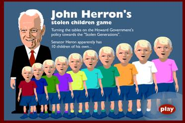
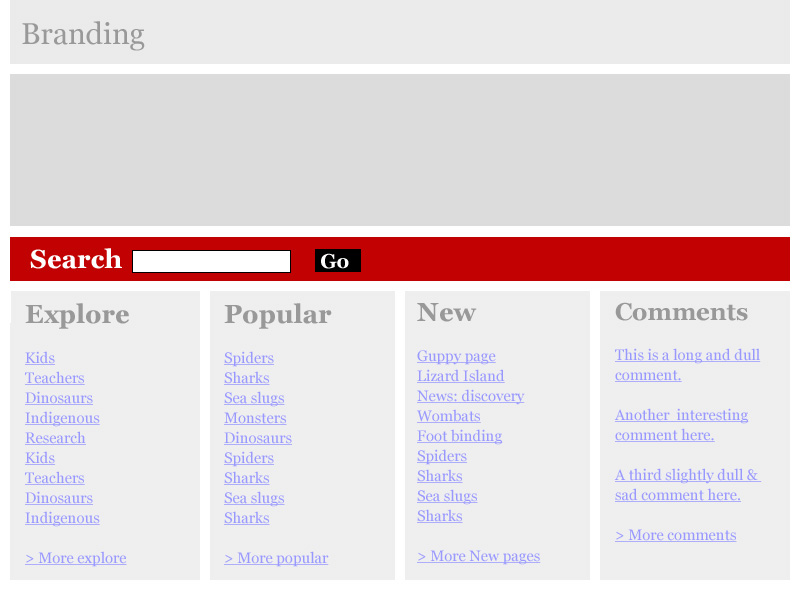
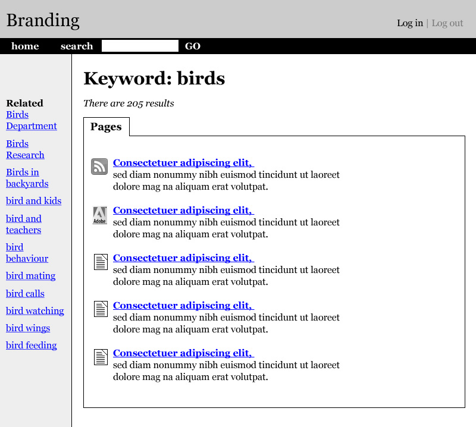
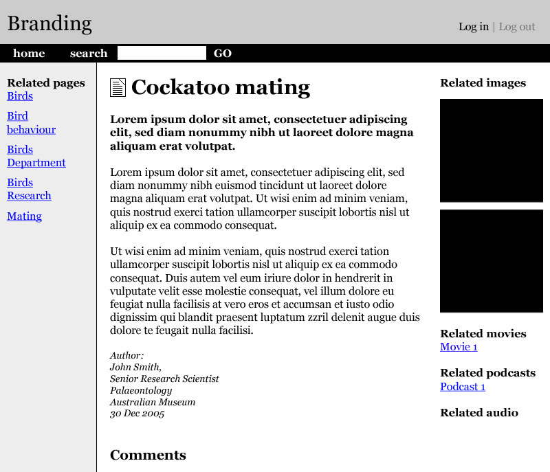
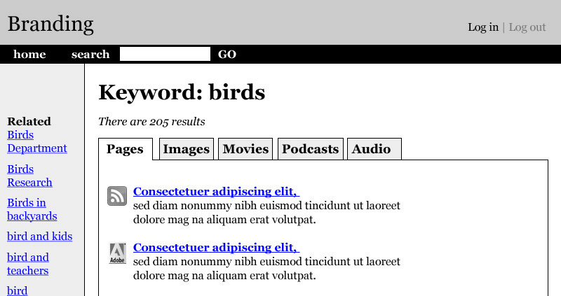
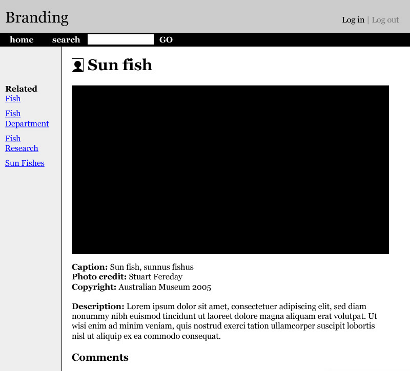

Published:
My presentation at Webstock, Friday 26 May 2006 - "Let go and allow users to control their own experience" is now available:
The presentation is available in:
Let go and allow users to control their own experience
A forgotten past
Five years ago I was an internet criminal - hunted by the police.
"Australian web designer steals Australian Senator's children!"
The game

The email
"This is to formally let you know that I am instituting proceedings against you for defamation in the Supreme Court of Queensland . The Federal Police will be involved to track this website if I do not receive a response within 24 hours."
John Herron Minister for A.T.S.I.Affairs
About Lisa Miller
- Honours degree in sexual selection
- Web Research at the Australian Museum
- Owner of RedQueen
- Project manager at Red Square
- Forward thinker
A journey
This presentation describes a journey that Lisa Miller and I embarked on - using the Australian Museum website to:
"Explore ways that we could let go and allow users to control their own experience"
Relevance
Some of these ideas may be relevant to you and others not.
You may have seen some of these ideas before.
This is not a complete solution.
This is simply a discussion about a range of ideas and about the journey itself.
Withholding judgement
Lisa and I made this journey in small steps.
We took our time.
But more importantly, we explored ideas without judgement.
Background
The Australian Museum website comprises of:
- 115,000 total files
- 3,000 - folders
- 43,000 pages
- 130 sections
- 12 websites
- 4 portals
Existing problems
- Some content is hard to find
- Some content is old, out of date
- The front page doesn't represent the depth of content on the site
- The navigation systems are illogical
- And the content is often dull
Funnily enough, these points make the word "horid"
Time to change
Late last year, the Australian Museum web team decided it was time to rebuild the Museum's site.
Initial aims
The web team's aim was to:
"Create a series of intuitive portals that would allow users to get to content quickly and easily".
Initial directions
We began a range of processes that included:
- Stock take of existing content
- Card sort of existing sections
- Decided on a range of portals
- Discussed names of portals
- Tested the names of each portal with users
The results
Out of this process we came up with 13 portals
- Animals
- Fossils and dinosaurs
- Rocks and minerals
- Indigenous Australia
- Online science
- Online features
- Kids stuff
- Teachers and students resources
- Visiting the Museum
- About the Museum
- Behind the scenes
- Collections
- Research
Legacies and agendas
How did we end up with so many portals?
- Large amounts of legacy content
- Pressure to mirror in-house department structures
- In-house agendas
Portal overload
At this point, Lisa Miller and I become very concerned with the 'portal' direction.
- Too many portals
- Mixing of portal concepts – content and user groups
- Many content sections did not fit intuitively into this structure
- Assumptions about user pathways
- Concerns about silos of information
Path concerns
However, our primary concerns were about user pathways. We wanted to avoid:
- Forced, inflexible pathways
- Pathways that were based on taxonomic or department structure
- Pathways that created silos of information
Exhibition floor plans
Forced paths don't work.
Given the choice, people will always follow their own paths.
When there is no choices available, people will often be resentful.
A fresh approach
We decided to scrap the portals idea and start afresh.
The question was:
"How would you organize and structure a large site if you had a totally blank slate".
Objective 1
Allow users to control and determine their own pathways?
A stripped-back approach
Imagine if a site could be stripped back to just three levels of pages:
- front page with a search tool
- search results page
- content page
Sample front page

Sample results page

Sample content page

Tag-a-rama
This three-step process could be controlled by tagging.
- Pages could be indexed using tags
- Search results could be based on relevant tags
- Instead of creating a fixed side navigation, a range of tag-based related information could be provided.
Bird behavior example
A "bird behavior" page may have related information like "animal behavior" or "frog behavior".
Using a traditional navigation system, users would only get bird related links.
"Related pages" provide users with a more flexible and organic navigation system
Allowing users control
Imagine if users could control their experience more fully by adding their own tags to pages.
They could be given a list of current keywords associated with any page, then allowed to add keywords that they felt appropriate.
Tagging any media
Theoretically, any media could be tagged by content creators and users.
- Images
- Podcasts
- Audio files
- Movies
- Content pages
Extending search results
This would mean search results would provide users with keyword-based results across a variety of media.
Searching results

A different 'pages'
Tags move away from the concept of pages as single entities. Pages would become containers for keyword-based data
- Content
- Related content
- Related images
- Related podcasts
- Related movies
- Related audio files
Sample tag-based page
Entities as pages
The use of tags allows images, podcasts, audio files, and movies to become entities in their own right - related but not specifically tied to content pages.
Image page

Objective 2
Allow users to communicate with content providers as well as each other.
Comment on anything
Images, podcasts, audio files, and movies could be set up to allow comments.
A single website could then host thousands of individual comments and discussions.
Extended collections
One interesting benefit is that Museum collections would cease to be static photo galleries. Users could comment on, post images to, and write about individual items within collections.
The collections could come alive!
Content creation
Another benefit of this single page vs full section approach is that content is easier to create and publish.
In the past, the Museum would research and then create a wide range of pages on a particular topic. The entire project is only published when all pages are ready.
Objective 3
Encouraging membership to increase community involvement and ownership.
Flickr-like membership
With a system based on tags and comments, a members section could be created to allow users to track:
- Their recent comments
- Their recently 'favourited' pages, images, podcasts, audio files or movies
- Keywords they have added
- Customised feeds from areas of the site
Downsides?
Numerous downsides
There are numerous downsides to this approach including:
- Control of keywords
- Moderating comments
- Disparate elements
- No clear pathways
- No expert voice
Interestingly, many of these revolve around the concept of "letting go".
Letting go
A famous Buddhist monk once said:
"The hardest word for Westerners to say is 'let'. Let it happen… let it be…"
What does this mean?
Westerners are uptight control freaks!
Expert voice
Many museums and institutions are currently concerned about allowing users to have a voice as it is perceived to dilute expert opinion.
Two examples of this concern in action are the Sea Slug Forum and WSG list.
Flagging voices
One of the quickest ways to deal with this problem is to visually flag and identify comments from experts so that they stand out and are recognised in amongst community discussion.
Site mourning
Some people really want an entire sites or section to explore.
This is entirely valid.
Ironically, these concerns have often come from content creators rather than users.
Wrap up
We've discussed:
- Tag-based pathways
- Pages becoming a series of entities
- Commenting and communities
- Membership
- Downsides
As before, these are ideas, not a solution
Thank you